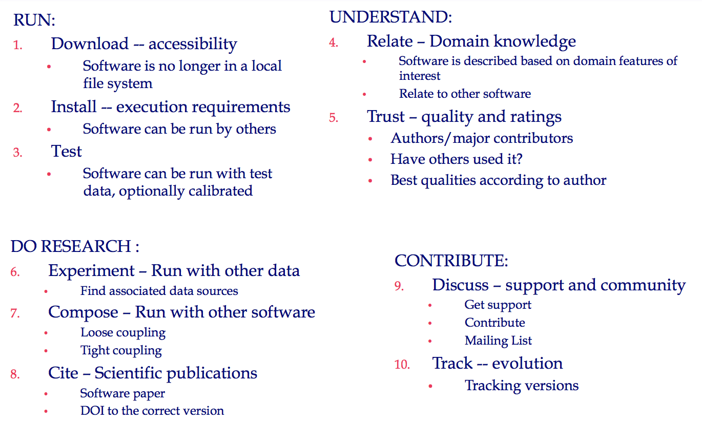

The aim of the ontology is to provide a vocabulary for people to publish their software in order for it to be accessible to other users, allow others to run it, cite it, understand it, and use it in their experiments.
The aim of the ontology is to provide a vocabulary for people to publish their software in order for it to be accessible to other users, allow others to run it, cite it, understand it, and use it in their experiments.
An overview can be seen below:
Complete description of the ontology: a diagram explaining how the classes are related, examples of usage, etc.
IRI: http://ontosoft.org/software#Access
download
IRI: http://ontosoft.org/software#BenchmarkInformation
IRI: http://ontosoft.org/software#Citation
Used for citing publications with citation next and a citation location
IRI: http://ontosoft.org/software#CitationText
Text associated with a citation
IRI: http://ontosoft.org/software#Cite
scientific publications
IRI: http://ontosoft.org/software#CommunityInformation
Information about any on-line resource for accessing the software community (Mailing-list, discussion board, wiki, etc)
IRI: http://ontosoft.org/software#Compose
run with other software
IRI: http://ontosoft.org/software#Composition
Describes composition of a software with others in a workflow
IRI: http://ontosoft.org/software#Contribute
evolution
IRI: http://ontosoft.org/software#DateEntity
A date entity
IRI: http://ontosoft.org/software#DevelopmentInformation
Software development/maintenance description
IRI: http://ontosoft.org/software#Discuss
support and community
IRI: http://ontosoft.org/software#Research
IRI: http://ontosoft.org/software#Execute
IRI: http://ontosoft.org/software#Experiment
run with other data
IRI: http://ontosoft.org/software#FileIO
Indicates a file based input to, or file based output from a software
IRI: http://ontosoft.org/software#Identifier
A text based identifier
IRI: http://ontosoft.org/software#ImplementationDetails
Details about implementation of the code (parallelization, etc)
IRI: http://ontosoft.org/software#Install
execution requirements
IRI: http://ontosoft.org/software#Keywords
Comma separated keywords associated with the software
IRI: http://ontosoft.org/software#License
A class of licenses that the software is released under
IRI: http://ontosoft.org/software#Location
A Location URL
IRI: http://ontosoft.org/software#MeasurementEntity
A numeric value with units
IRI: http://ontosoft.org/software#MetadataCategory
Categories of metadata properties are defined as subclass of this
IRI: http://ontosoft.org/software#NumericEntity
A numeric entity
IRI: http://ontosoft.org/software#OperatingSystem
Operating Systems that the software runs on
IRI: http://ontosoft.org/software#Person
A Person identifier class
IRI: http://ontosoft.org/software#ProgrammingLanguage
The class of programming languages
IRI: http://ontosoft.org/software#Relate
domain knowledge
IRI: http://ontosoft.org/software#Run
test and calibration
IRI: http://ontosoft.org/software#Software
A Software is any piece of code that is described in Ontosoft. This could some visualisation software, software package, library, componentised scripts, etc. This can be subclassed if software categories with extra properties are required, otherwise one should use SoftwareTag to categorise software.
IRI: http://ontosoft.org/software#SoftwareCategory
A software can be tagged with multiple categories. Multiple instances can be created of this, and it can also be subclassed to have hierarchical categories
IRI: http://ontosoft.org/software#SoftwareDescription
An informal text-based description of software
IRI: http://ontosoft.org/software#SoftwareVersion
A version of a piece of software described by ontosoft
IRI: http://ontosoft.org/software#TestData
TestData is used to describe test datasets for the software
IRI: http://ontosoft.org/software#TestDataDescription
Description of the Test Data provided
IRI: http://ontosoft.org/software#TestInstructions
Instructions on how to run the test with the provided test data including test cases, setup instructions, etc.
IRI: http://ontosoft.org/software#TextEntity
A text entity
IRI: http://ontosoft.org/software#Track
evolution
IRI: http://ontosoft.org/software#Trust
quality and ratings
IRI: http://ontosoft.org/software#Understand
IRI: http://ontosoft.org/software#Update
IRI: http://ontosoft.org/software#UsageInformation
Information about uses of this software (paper dois, research labs, etc)
IRI: http://ontosoft.org/software#UsageStatistics
Statistics about software use (downloads, frequency of use, etc)
IRI: http://ontosoft.org/software#UseLimitations
Constraints on use of the software, any simplifications, situations it isn't designed for
IRI: http://ontosoft.org/software#UsesAndAssumptions
Description of how the software is used, and any assumptions made for using the software
IRI: http://ontosoft.org/software#WorkflowDescription
Describes use of the software with other software in a workflow
IRI: http://ontosoft.org/software#hasActiveDevelopment
How is the software being developed or maintained ?
IRI: http://ontosoft.org/software#hasAverageRunTime
has characteristics: functional
Do you know how long it takes to run this software on average ?
IRI: http://ontosoft.org/software#hasBenchmarkInformation
Is there any benchmark information about the software ?
IRI: http://ontosoft.org/software#hasCitationLocation
What is the URL for the citation ?
IRI: http://ontosoft.org/software#hasCitationText
What is the text associated with the Citation ?
IRI: http://ontosoft.org/software#hasCodeLocation
What is the URL for the code ?
IRI: http://ontosoft.org/software#hasCompatibleSoftware
What software can this software be composed with in a workflow ?
IRI: http://ontosoft.org/software#hasCompositionDescription
has characteristics: functional
Is this software typically used with other software in a workflow ? (eg: for visualization, preprocessing, postprocessing, etc)
IRI: http://ontosoft.org/software#hasCreator
Who created this software ?
IRI: http://ontosoft.org/software#hasDependency
What other software does the software require to be installed ?
IRI: http://ontosoft.org/software#hasDocumentation
Is there any on-line documentation about the software ?
IRI: http://ontosoft.org/software#hasDomainKeywords
Mention any domain specific keywords for this software
IRI: http://ontosoft.org/software#hasExecutableLocation
What is the URL for the executable ?
IRI: http://ontosoft.org/software#hasFileId
What is the id for the File I/O ?
IRI: http://ontosoft.org/software#hasFileType
What is the File I/O type ?
IRI: http://ontosoft.org/software#hasImplementationLanguage
What languages is the program written in ?
IRI: http://ontosoft.org/software#hasInputFile
What input files does the software require ?
IRI: http://ontosoft.org/software#hasInstallationInstructions
How can one install the software ?
IRI: http://ontosoft.org/software#hasLicense
What license is the code released under ?
IRI: http://ontosoft.org/software#hasMajorContributor
Are there any major contributors of note for this software ?
IRI: http://ontosoft.org/software#hasName
has characteristics: functional
What is the software called ?
IRI: http://ontosoft.org/software#hasOtherImplementationDetails
has characteristics: functional
Are there any other important details about the implementation of this code (parallelization, special hardware, etc) ?
IRI: http://ontosoft.org/software#hasOutputFile
What output files does the software produce ?
IRI: http://ontosoft.org/software#hasPersonIdentifier
Provide a Twitter handle, ORCID Id, email address, github URL, home page, or any other unique identifier for this person
IRI: http://ontosoft.org/software#hasPreferredCitation
Is there a preferred publication for citing this software ?
IRI: http://ontosoft.org/software#hasProjectWebsite
Is there a project website for the software ?
IRI: http://ontosoft.org/software#hasRelevantDataSources
Are there any relevant data sources to conduct an experiment with ?
IRI: http://ontosoft.org/software#hasSalientQualities
What other useful features of this software are worth highlighting ?
IRI: http://ontosoft.org/software#hasShortDescription
has characteristics: functional
Would you like to provide a short description for this software ?
IRI: http://ontosoft.org/software#hasSoftwareCategory
What categories are associated with the software ?
IRI: http://ontosoft.org/software#hasSoftwareCommunity
Is there any on-line resource for accessing the software community ? (eg. Mailing-list, discussion board, wiki, etc)
IRI: http://ontosoft.org/software#hasSoftwareSupport
How can a user get support for the software ? (eg. Report bugs, request features and extensions, etc)
IRI: http://ontosoft.org/software#hasSoftwareVersion
What versions does the software have ?
IRI: http://ontosoft.org/software#hasTestData
Do you have any test data for the software ?
IRI: http://ontosoft.org/software#hasTestDataDescription
has characteristics: functional
Can you describe the test data ?
IRI: http://ontosoft.org/software#hasTestDataLocation
What is the URL for test data ?
IRI: http://ontosoft.org/software#hasTestInstructions
has characteristics: functional
Are there any specific instructions for testing the software ?
IRI: http://ontosoft.org/software#hasUniqueId
What is the DOI or any other unique identifier for this software (or software version) ?
IRI: http://ontosoft.org/software#hasUsageInformation
Is there any information about uses of this software (paper dois, research labs, etc) ?
IRI: http://ontosoft.org/software#hasUsageStatistics
Is there any information about software use (downloads, frequency of run, etc) ?
IRI: http://ontosoft.org/software#hasUseLimitations
Are there any constraints on use, situations it is not designed for, simplifications ?
IRI: http://ontosoft.org/software#hasUsesAndAssumptions
has characteristics: functional
What are the recommended uses and assumptions for the software ?
IRI: http://ontosoft.org/software#hasVersionId
What is the software version id ?
IRI: http://ontosoft.org/software#hasVersionReleaseDate
When was this version released ?
IRI: http://ontosoft.org/software#hasWorkflowDescription
has characteristics: functional
Describe the workflow ?
IRI: http://ontosoft.org/software#requiresAverageMemory
has characteristics: functional
Are there any memory requirements for this software ?
IRI: http://ontosoft.org/software#similarSoftware
Is there any other similar software that you know of ?
IRI: http://ontosoft.org/software#supersedesVersion
What version does this software version supersede ?
IRI: http://ontosoft.org/software#supportsOperatingSystem
What Operating Systems can the program run on ?
IRI: http://ontosoft.org/software#hasDateValue
has characteristics: functional
IRI: http://ontosoft.org/software#hasNumericValue
has characteristics: functional
IRI: http://ontosoft.org/software#hasTextValue
has characteristics: functional
IRI: http://ontosoft.org/software#hasUnits
has characteristics: functional
IRI: http://ontosoft.org/software#hasURI
has characteristics: functional
IRI: http://ontosoft.org/software#category
Category of software metadata properties
IRI: http://purl.org/dc/elements/1.1/description
IRI: http://ontosoft.org/software#isRequired
This property annotation indicates if a property is a required property or not
IRI: http://ontosoft.org/software#searchConfig
This property annotation provides information to be handed over to search engines (like Solr) to explain how to tokenize and index the property values
IRI: http://ontosoft.org/software#uiConfig
This property annotation provides UI specific information for the property like positioning, special UI interface, etc
IRI: http://ontosoft.org/software#ALv2
IRI: http://ontosoft.org/software#C
IRI: http://ontosoft.org/software#Cplusplus
IRI: http://ontosoft.org/software#CreativeCommons
IRI: http://ontosoft.org/software#CSS
IRI: http://ontosoft.org/software#Fortran
IRI: http://ontosoft.org/software#GPLv2
IRI: http://ontosoft.org/software#GPLv3
IRI: http://ontosoft.org/software#HTML
IRI: http://ontosoft.org/software#Java
IRI: http://ontosoft.org/software#Javascript
IRI: http://ontosoft.org/software#Matlab
IRI: http://ontosoft.org/software#Perl
IRI: http://ontosoft.org/software#Python
IRI: http://ontosoft.org/software#Rscript
Add your references here in a list. It is recommended to have them as a list.
The authors would like to thank Chris Mattmann, Scott Peckham, Kaijian Xu, Erin Robinson and Chris Duffy for helpful discussions about software descriptions that contributed to this ontology
Also thanks to Silvio Peroni for developing LODE, a Live OWL Documentation Environment used for representing the Cross Referencing Section of this document and Daniel Garijo for developing the script used to create the template of this document.
Software benchmarking information